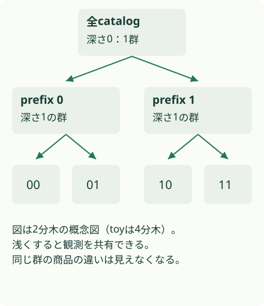
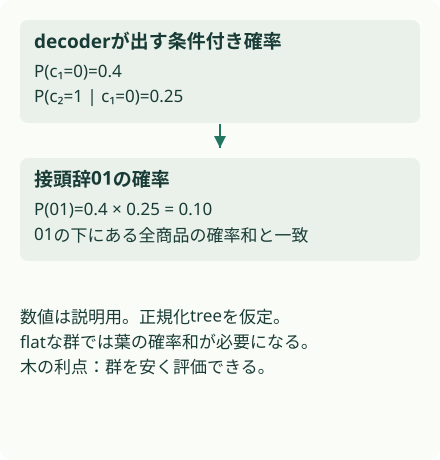
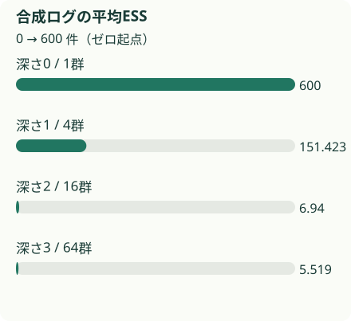

概要
商品単位の重要度重みが不安定なとき、SIDの接頭辞ごとに確率を合算すれば、有効な標本が増える。精度改善の中心は粗粒度化で、木の固有の利点はdecoderから群の確率を安く取り出せることにある。
問題設定
既存方策π₀のログで候補方策πₑの報酬を推定するのがOPE（Off-Policy Evaluation）だ。商品aへの報酬rを πₑ(a|x)/π₀(a|x) 倍するIPSは、候補が好む商品を既存方策がほとんど出さないと不安定になる。ログ件数が大きくても、少数の巨大な重みが推定を支配する。
対象は同じcatalogとSID tree上の方策変更。候補生成器の変更で新しい商品が行動集合に入る場合や、再tokenizeで木が変わる場合は対象外だ。
接頭辞の長さで評価の解像度を変える
{kind=link}

核心
著者の主張 · 論文に書かれていること
著者はSIDのprefixをOPEの行動抽象化に使い、supportの回復と誤差低下を示す。同じ群数のflat clusteringでも精度差は有意でなく、階層の利点を確率取得の実行可能性と解像度の選択に位置付ける。
解釈・批評 · 読書メモ
SIDを「商品を生成する符号」から「評価する粒度を選ぶ仕組み」へ読み替える点が有用だ。ただし群の中で何を出すかを変えた差は粗粒度の評価から消える。新tokenizerや新しい候補集合まで比較できる万能のOPEではない。
モデル / 手法
商品ではなく、同じ接頭辞に属する群を重み付けする
商品のSIDを c(a)=(c₁,…,c_L) とし、先頭ℓ tokenが一致する商品群をCとする。群の確率は π(C|x)=Σ_{a∈C}π(a|x)。cluster IPSは V̂_ℓ = (1/M) Σᵢ [πₑ(Cᵢ|xᵢ)/π₀(Cᵢ|xᵢ)] rᵢ を計算する。SNIPSはMで割る代わりに重みの総和で割る（§2）。
clusterの出現確率は補正されるが、群内の商品分布はlogging側のまま残る。したがって群内で報酬が同じ、またはtargetとloggingの条件付き分布が同じなら、粗粒度化による偏りは生まれない。群内で高報酬商品へ大きく移す変更は、浅いprefixでは見落としやすい。
decoderの確率積がcatalog全件の加算を代わりに担う
自己回帰decoderでは π(c₁:ℓ|x) = ∏_{t=1}^ℓ π(c_t|x,c_<t)。正規化された同じtree方策なら、この積は下の葉の確率和と一致する。必要なのはℓ段の条件付き確率で、flat clusteringで群内の商品確率を足す処理と異なる。beam searchや後段rerankingを含む配信なら、その実際の選択方策と確率が一致しているかを別途確かめたい。
小さい平均量子化誤差だけでは、バイアス上限は小さくならない
命題3.1はraw cluster IPSについて、既知の確率、群のpositivity、埋め込みを通じた報酬、Lipschitz連続性を仮定する。上限は |Bias(V̂_ℓ)| ≤ 2 L_q δ_max,ℓ E[TV_in,ℓ]。L_qは埋め込み距離に対する報酬変化の上限、δ_maxは最も悪く再構成された商品の残差、TV_inはtargetで重み付けした群内分布のずれだ。
平均二乗残差εを使うには δ_max ≤ κ√ε というcodebook依存の追加条件が必要。平均だけ良くしても外れた商品の残差は残りうる。この上限はSNIPS全般の誤差保証ではなく、論文も仮定が近似的なので機構の説明として用いる（§3）。
全商品を列挙せず、prefixの確率を読む
{kind=link}

粗くすると消えるのは群内の方策差
- 重要度重みwᵢ = πₑ(Cᵢ|xᵢ) / π₀(Cᵢ|xᵢ)
群の出現率をtargetに合わせる。群内の商品選択はlogging側のまま。
- 条件付きバイアス上限|Bias| ≤ 2 L_q δ_max,ℓ E[TV_in,ℓ]
群内の報酬変動と群内方策差の両方が小さければ偏りも小さい。既知確率・positivity・埋め込み仮定が必要。
なぜ効きそうか
解釈・推論
接頭辞を短くすると、同じ群に属する商品の観測を共有できる。重要度重みのばらつきが減る一方、群内の好みの違いを捨てる。この交換条件を深さで操作できると、観測の薄い段階では粗く、十分なsupportが得られた段階では細かく比較する設計につながる。
根拠
本番のsupport診断と、制御実験の精度を区別する
本番ログでは商品ESSが生の件数のおよそ0.003倍まで落ちる。候補確率が記録されたsliceでは、greedy targetに対する粗粒度化でESSが約1.8倍になる（§4.2–4.3、付録表5）。本番ログにはランダム露出のoracleがなく、ここから推定精度は直接検証できない。
KuaiRandのランダム露出データを二分し、一方から方策、他方からreward生成とoracleを作る。7,339商品、M=5,000、200seedでSNIPSのRMSEは商品粒度0.155、階層粒度0.087だった。ただし主要表の深さはoracleを使う別validation seedで選ばれ、実装可能な選択器の成績と分ける必要がある（表1）。
ログだけで深さを選ぶSLOPEをMIPSに適用した列は、M=5,000でRMSE 0.109。oracle選択SNIPSの0.086とは推定器も違う（表3）。flat k-meansとの同群数比較では木の精度優位は確認されない。候補選択の改善も主に群間の確率を動かす方策で見られ、群内だけを変える方策では利点が失われる（表2）。Amazonの追加実験は自己選択されたratingを使うため、独立な因果的検証とは扱わない。
実行可能な理解
64商品を4分木へ並べ、各大群で先頭商品に97%の条件付きlogging確率を与える。targetは群の配分と群内の好みを変える。600件×250seedの同じログから、深さ0/1/2/3でIPSとSNIPSを計算する。深さ3は商品、深さ0は全商品を一つにまとめる対照だ。
真の期待報酬を既知にし、RMSE、IPS分散、厳密な期待バイアス、ESS、観測された群の割合を保存する。ESSは (Σw)²/Σw²。prefix確率の積と葉の和の一致も数値で確かめる。
このLabは run.py 単体で実行できます。結果はコードと同じフォルダーに保存されます。
合成実験 · Mechanism PARTIAL
観測を共有する粒度と誤差を比べる
全て同じ合成ログを使用。深さをoracleで選んだ運用成績とは扱わない。
接頭辞の深さ：0
- IPS RMSE：0.340282
- SNIPS RMSE：0.340282
群数 1、平均ESS 600.0、raw IPSの厳密バイアス -0.33948。深さ3は商品粒度。
数値の出所：このLabの results.json。論文の測定値ではありません。
結果
64商品・既知確率の合成実験。深さ0は全商品を一群にまとめる対照、深さ3は商品IPS。実データのSID学習・深さ選択・本番性能は未検証。
粒度ごとの誤差と有効標本数
- n: {'items': 64, 'logs_per_seed': 600, 'seeds': 250}
- seed: 0..249
| 指標 | clusters | IPS_RMSE | SNIPS_RMSE | IPS_variance | exact_IPS_bias | mean_ESS | observed_cluster_fraction |
|---|---|---|---|---|---|---|---|
| depth_0 | 1 | 0.340282 | 0.340282 | 0.000342 | -0.33948 | 600.0 | 1.0 |
| depth_1 | 4 | 0.112125 | 0.102144 | 0.004101 | -0.09248 | 151.423 | 1.0 |
| depth_2 | 16 | 0.487769 | 0.242586 | 0.232793 | -0.00815 | 6.94 | 0.68175 |
| depth_3 | 64 | 0.833368 | 0.28006 | 0.689836 | 0.0 | 5.519 | 0.288438 |
生の results.json
{
"note": "64商品・既知確率の合成実験。深さ0は全商品を一群にまとめる対照、深さ3は商品IPS。実データのSID学習・深さ選択・本番性能は未検証。",
"oracle_value": 0.5944,
"decoder_mass_max_error": 0.0,
"experiments": [
{
"name": "粒度ごとの誤差と有効標本数",
"seed": "0..249",
"n": {
"items": 64,
"logs_per_seed": 600,
"seeds": 250
},
"metrics": {
"depth_0": {
"clusters": 1,
"IPS_RMSE": 0.340282,
"SNIPS_RMSE": 0.340282,
"IPS_variance": 0.000342,
"exact_IPS_bias": -0.33948,
"mean_ESS": 600.0,
"observed_cluster_fraction": 1.0
},
"depth_1": {
"clusters": 4,
"IPS_RMSE": 0.112125,
"SNIPS_RMSE": 0.102144,
"IPS_variance": 0.004101,
"exact_IPS_bias": -0.09248,
"mean_ESS": 151.423,
"observed_cluster_fraction": 1.0
},
"depth_2": {
"clusters": 16,
"IPS_RMSE": 0.487769,
"SNIPS_RMSE": 0.242586,
"IPS_variance": 0.232793,
"exact_IPS_bias": -0.00815,
"mean_ESS": 6.94,
"observed_cluster_fraction": 0.68175
},
"depth_3": {
"clusters": 64,
"IPS_RMSE": 0.833368,
"SNIPS_RMSE": 0.28006,
"IPS_variance": 0.689836,
"exact_IPS_bias": 0.0,
"mean_ESS": 5.519,
"observed_cluster_fraction": 0.288438
}
}
}
],
"verification": {
"mechanism": "PARTIAL",
"performance": "NOT TESTED",
"scaling": "NOT TESTED",
"production_applicability": "NOT TESTED"
},
"explorer": {
"label": "接頭辞の深さ",
"unit": "",
"metric": "RMSE（小さいほどよい）",
"default": 0,
"frames": [
{
"value": 0,
"note": "群数 1、平均ESS 600.0、raw IPSの厳密バイアス -0.33948。深さ3は商品粒度。",
"bars": [
{
"label": "IPS RMSE",
"value": 0.340282
},
{
"label": "SNIPS RMSE",
"value": 0.340282
}
],
"lines": []
},
{
"value": 1,
"note": "群数 4、平均ESS 151.423、raw IPSの厳密バイアス -0.09248。深さ3は商品粒度。",
"bars": [
{
"label": "IPS RMSE",
"value": 0.112125
},
{
"label": "SNIPS RMSE",
"value": 0.102144
}
],
"lines": []
},
{
"value": 2,
"note": "群数 16、平均ESS 6.94、raw IPSの厳密バイアス -0.00815。深さ3は商品粒度。",
"bars": [
{
"label": "IPS RMSE",
"value": 0.487769
},
{
"label": "SNIPS RMSE",
"value": 0.242586
}
],
"lines": []
},
{
"value": 3,
"note": "群数 64、平均ESS 5.519、raw IPSの厳密バイアス 0.0。深さ3は商品粒度。",
"bars": [
{
"label": "IPS RMSE",
"value": 0.833368
},
{
"label": "SNIPS RMSE",
"value": 0.28006
}
],
"lines": []
}
]
}
}商品粒度の平均ESSは5.519件、深さ1の4群では151.423件だった。SNIPSのRMSEは0.280から0.102へ下がる。一方、全体を1群にするとESSは600でもRMSEは0.340に悪化する。標本を共有し過ぎると、群内に埋もれた方策差を見落とす。これらはすべて合成実験の値。
合成ログの平均ESS
{kind=link}

検証できたこと
粗粒度化で重みが安定する一方、浅すぎる群では方策の違いが消えてバイアスが残る。既知のtoy分布に対する期待バイアスと、有限ログからのRMSEを別々に計算した。decoder massの一致は、この正規化treeで確認した。
検証していないこと
SID学習、埋め込みのLipschitz性、SLOPE、OffCEM、本番loggerの確率復元は未検証。toyでは全商品の確率が正で既知だ。ゼロsupportを持つ商品を観測なしに識別できるわけではない。深さは一つ選ばず全列を示し、oracleを見て選んだ値を運用成績と呼ばない。
実装
リポジトリのルートで uv run papers/sid-ope-hierarchy/run.py を実行する。Python標準ライブラリだけを使い、CPUで完了する。結果は同じディレクトリの results.json に保存する。
乱数を使う実験はseedを固定した。数値は論文の測定値と別に集計している。
原論文・公式コード対応
| 論文 | このLab | 省略・公式コード |
|---|---|---|
| §2 cluster IPS/SNIPS | cluster_masses、experiment |
contextなしのcatalog bandit |
| prefix積の一致 | decoder_prefix |
本物のdecoderは学習せず、葉確率から条件付き確率を構成 |
| 命題3.1 | 方法節、exact_IPS_bias | Lipschitz定数の推定や上限実証はしない |
| §4 評価 | seed別RMSE/ESS | 論文データ・公式repo URLは未取得 |
一次資料は arXiv v1 PDF。公式実装の実行は行っていない。